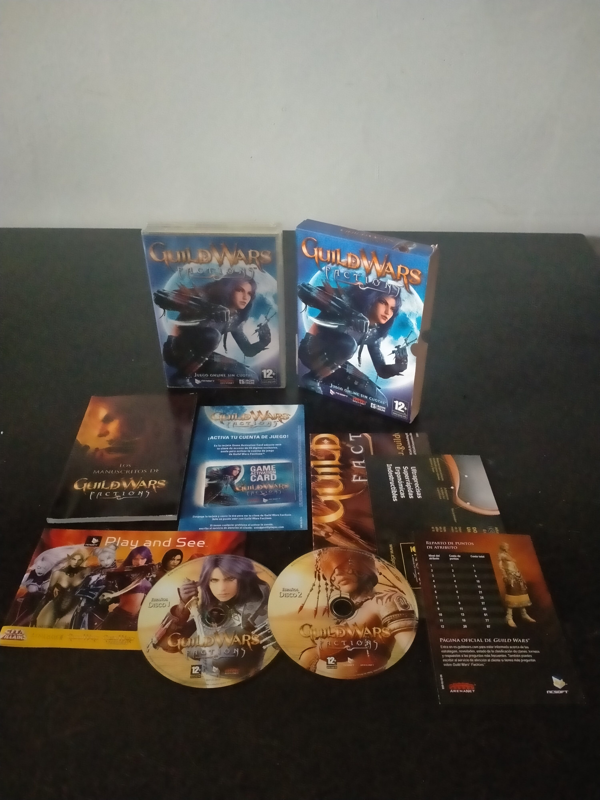

Ficha #000000
Guild Wars Factions
Guild Wars Factions es la segunda campaña independiente de Guild Wars, desarrollada por ArenaNet y publicada por NCsoft en 2006. Ambientada en el continente de Cantha, amplía la fórmula del juego original con nuevas profesiones, una estructura de progresión más directa y un fuerte peso del conflicto entre facciones, con Kurzick y Luxon como grandes potencias enfrentadas. Mantiene una de las señas de identidad más relevantes de Guild Wars: juego online sin cuotas mensuales, instancias cooperativas, PvP competitivo y construcción estratégica de habilidades. Esta edición española en formato DVD Case representa una etapa muy concreta del PC físico de mediados de los 2000, cuando los juegos online todavía llegaban acompañados de manual, discos, clave de activación y material promocional.
- Formato
- DVD Case
- Plataforma
- Win98 WinMe Win2000 WinXP
- Género
- RPG online Acción RPG MMORPG
- Serie
- Todos DVD Case
- Desarrollador
- ArenaNet
- Distribuidor
- NCsoft
- EAN
- —
Contenido de la edición
- Caja DVD Case
- Funda exterior de cartón
- Disco 1
- Disco 2
- Manual Los manuscritos de Guild Wars Factions
- Tarjeta de activación de cuenta
- Guía de habilidades y atributos
- Folleto promocional Play and See
Preservación
- Protección
- Código o clave
- Formato recomendado
- ISO
- Jugable en virtualización
- No determinado
El juego requiere clave de acceso asociada a una cuenta online y conexión a los servidores del servicio. La preservación física puede realizarse mediante imagen de los discos, pero la jugabilidad depende de una cuenta válida y de la disponibilidad del servicio online.